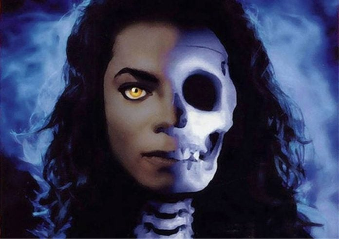

The Wiz: The Super Soul Musical "Wonderful Wizard of Oz" es un musical de Broadway con letra y música de Charlie Smalls y libreto de William F. Brown.
En el año 1975 la obra obtuvo un total de siete Premios Tony incluyendo Mejor Musical. Fue reestrenada en New York, Londres, San Diego y en los Países Bajos. La adaptación cinematográfica fue protagonizada por Diana Ross y lanzada en 1978.
La obra se desarrolla en la ciudad de Kansas, donde una niña llamada Dorothy no está conforme con su vida rutinaria y un día un tornado la arrastra al mundo de Oz donde encuentra a Glinda, la bruja buena del norte, la cual le indicaba como llegar a casa, en el camino encuentra a un hombre de lata un hombre espantapájaros sin cerebro y un león cobarde. Los cuatro se dirigen a ver al mago para que pueda ayudarlos, pero una bruja mala les pondrá tropiezos en su camino y hará lo imposible para que no tengan un final feliz, pero Dorothy junto a sus amigos derrotan a la bruja mala y ella puede al fin volver a su hogar.
Disney diseño una nueva atracción para su parque temático Epcot Center utilizando tecnología en 3D, una película con un importante reparto y grandes nombres respaldándolo.
Captain EO fue un ambicioso e innovador proyecto, con tecnología de última generación.
Steven Spielberg fue el primer director con el que contaron para este corto de ficción, pero tras algunas desavenencias terminó siendo dirigido por Francis Ford Coppola.
El corto es protagonizado por el cantante Michael Jackson como Capit&aaecute;n EO, Jackson compuso para la película las canciones Another Part of Me (luego incluida en el séptimo álbum de Michael Bad) y We are here to change the world, creada expresamente para el corto, pero que luego en el 2004 sería incluida en la colección de canciones de Michael Jackson titulada Michael Jackson: The Ultimate Collection.
El 20 de diciembre de 2009, Disneyland anunció que el corto Captain EO volvería a ser emitido a partir de febrero de 2010. Durante 2010 fue emitido en Epcot, con la novedad, que contaba con tecnología del Cine 4D.
La atracción de Capitán EO, por decisión de Disney, dejó el parque Epcot a finales del 2015. Ya que dejó de ser atractivo para el público actual, dando paso a atracciones más actuales, aún por confirmar.
Moonwalker, también conocida como Michael Jackson: Moonwalker, es una película del género de antología musical del artista estadounidense Michael Jackson, lanzada en octubre de 1988.
Como es usual en este tipo de producciones, la película en vez de tener una única narración continua, consiste de una colección de ocho segmentos o vídeos cortos del artista. Varios de ellos correspondientes al séptimo álbum de estudio de Jackson, Bad (1987). Moonwalker se estrenó el 29 de octubre de 1988, casi un a&nitlde;o después de la publicación del álbum y, al mismo tiempo, del inicio de la primera gira musical a nivel mundial de Jackson.
Moonwalker no estuvo disponible en formato de vídeo en los Estados Unidos ni en Canadá hasta inicios de 1989, poco antes del final de la gira de Jackson. Dicha estaba programada para finalizar tiempo antes, pero fue aplazada debido a problemas en su voz.
La película lleva el nombre de la técnica de baile conocida como el "moonwalk", uno de sus movimientos más característicos y populares. El nombre del movimiento de baile fue acuñado por los medios de comunicación y no por Jackson; Sin embargo, él mismo eligió este como el título de la película.
Moonwalker fue estrenada simultáneamente en Europa, Asia y Sudamérica con gran éxito. Para abril de 1989 ya había vendido 800.000 ejemplares sólo en los Estados Unidos. La recaudación global para aquel entonces era de un estimado de 67 millones de dólares.
La película se compone de un collage de historias cortas, en lugar de ser una historia continua. Cada uno de los segmentos se describe en las subsecciones a continuación.
Badder
Una parodia del video musical para la canción del título de Bad, con los niños interpretando los papeles de los diversos personajes del clip original.
Una nota, en este video aparece una joven Nikki Cox, que es estrella en el Unhappily Ever After y Las Vegas. El grupo de cantantes The Boys aparecen como bailarines. El video también cuenta con Jermaine Jackson, Jr., Maurissa Tancharoen, las futuras estrellas de R&B Bilal Oliver y Brandon Quintin Adams de Los Patos Macho.
Speed Demon
El clip "Badder" desembarca en un segundo cortometraje, denominado Speed Demon, dirigido por el innovador en Claymation, Will Vinton. En la película, Michael, en un intento de evitar excesivos aficionados (incluso The Noid), se oculta a sí mismo como un conejo (llamado Spike), pero provoca la persecución de aficionados. Durante la persecución, se transforma en otras celebridades, incluyendo a Sylvester Stallone, Tina Turner y Pee-Wee Herman. Finalmente, después de perder a los aficionados, se quita el traje, que viene a la vida y lo reta a un baile.
Al final, un policía le dice que él está en una "Zona No Moonwalking", y cuando Michael se da vuelta Spike ya no estaba. La policía entonces sarcásticamente le solicita su autógrafo (en contraposición a la "Multa") en el tablero. Al igual que Michael se está preparando para salir en la moto, y en una cima rocosa se convierte en la cabeza de Spike, que luego le asiente con la cabeza. Luego a Michael se le nota feliz.
Leave Me Alone
El quinto segmento de la película es el cortometraje para la canción "Leave Me Alone", y cuenta con un vídeo musical de animación centrado en el interés de los medios en la vida personal de Jackson, porque él había sentido de que los tabloides, los medios de comunicación, prensa, paparazzi, etc. no lo dejan solo. Se siente que no importa lo que hace para demostrar su inocencia, no lo dejan solo. El vídeo de la canción ganó un Grammy en 1989 por el video más innovador, el único premio Grammy recibido por el álbum, Bad.
Smooth Criminal
La película abre con una secuencia que representa la elaboración de una escena vinculada a los acontecimientos que ocurren cerca del final de la película, en la que un grupo de niños (entre ellos Sean Lennon) ven como sale Jackson de una tienda de música, y de repente mafiosos lo atacan con ametralladoras. Katie, la niña más cercana a él, recuerda que, un día mientras jugaban con Michael en un campo con una pelota, su perro se escapó a un bosque, pero durante su búsqueda, Michael y Katie descubren la guarida de Mr. Big, Frankie Lideo (Joe Pesci, como una parodia del representante de aquel entonces de Jackson, Frank DiLeo), en el cual quería que todos los niños del mundo consumieran drogas.
Mr. Big descubre que Jackson y Katie estaban ahí, pero escapan; Jackson le dice a los niños que se reúnan con él en el Club 30's, que resulta ser una discoteca abandonada desde la década de 1930. La historia se remonta a los ataques de los mafiosos a Jackson, y aquí se revela que Jackson es en realidad un mágico gánster, que basa su poder en estrellas fugaces, como cuando Jackson se convierte en un poderoso auto deportivo con apariencia futurista, y se escapa de los ataques de Mr. Big corriendo a una velocidad casi supersónica. Mientras que los niños van al Club 30's y después tienen miedo cuando oyen un ruido y salen de ahí, luego Katie ve que es Michael, luego él entra y una luz brillante sale de la puerta. El Club ahora esta lleno de bailarines y Jackson participa en un baile de despegue con los demás miembros del club, y ahí comienza el vídeo musical de "Smooth Criminal".
La versión de la canción utilizada en este segmento es diferente de la versión del álbum - existen varias nuevas letras y la canción es mucho más global, incluyendo el material sinfónico por Bruce Broughton. Los extras son letras para hacer la historia de la canción claro. El más comúnmente visto la música es una forma de video de cuatro minutos collage de diversos clips de la película.
En el clímax de la canción, Mr. Big establece asedio al club y secuestra a uno de los niños, Katie. Terminada la canción, Jackson se reúne con los otros dos niños, donde le explican que Mr. Big ha secuestrado a Katie, y él decide ir a enfrentarlo en su guarida, cuando llega, termina rodeado por sus secuaces. Es entonces cuando Michael es golpeado, y Mr. Big aparece amenazando a Katie con inyectarle una droga. Aunque Katie logra zafarse de Mr. Big, él ha tenido suficiente y ordena a sus hombres que maten a Katie y a Michael, pero de repente pasa una estrella fugaz. Es entonces cuando Michael Jackson se transforma en un robot gigante y mata a todos los soldados de Mr. Big. Después se convierte en una nave espacial gigante, pero Mr. Big se encuentra en las laderas montado un gran cañón de energía, disparando sobre la nave espacial en un barranco cercano. Los niños son su próximo objetivo, pero la nave vuelve a partir de la guarida de Mr. Big justo a tiempo para repeler un nuevo cañonazo contra los niños. Tras esto, la nave se aleja a baja velocidad.
Come Together
Después del segmento Smooth Criminal Sean, Katie y Zeke regresan a la ciudad creyendo que Michael se fue para siempre. Después Michael aparece caminando en la oscuridad y los niños lo ven y lo abrazan y van de regreso al Club 30's y al entrar ven que ahora se transformó en un backstage y encuentra a su perro perdido Skipper. La película se cierra con Jackson, realizando un cover de "Come Together" (Canción de The Beatles). Uno de los niños actores en esta película es Sean Lennon, hijo de John Lennon. Lanzado como el B-Side de "Remember the Time" en enero de 1992 y una versión ligeramente distinta apareció en el segundo disco del álbum HIStory álbum, Lanzado en 1995.
The Moon is Walking (El Cierre de Créditos)
Durante los créditos, dos segmentos se muestran. En el primero se muestra a la banda Ladysmith Black Mambazo (cuya cual utilizan las partes de su cuerpo en vez de los instrumentos) cantando "The Moon is Walking" en el Club 30's (con imágenes de un detrés de escenas). En el segundo segmento se muestra la versión de 4 minutos del video "Smooth Criminal".

Ghosts es un mediometraje (aunque también podría ser calificado como un vídeo musical de tipo largometraje) protagonizado por Michael Jackson y dirigido por el director de cine Stan Winston. Fue filmado y estrenado por primera vez en 1996 junto con partes de la película de Stephen King, Thinner. Fue lanzado un año más tarde a nivel internacional en formato VHS.
La película cuenta la historia del Maestro, un ser con poderes sobrenaturales, que está siendo obligado por el alcalde del pueblo a salir de allí. La película incluye una serie de rutinas de baile realizadas por Jackson y su "familia" de demonios. Cada canción de la película fue tomada de los álbumes de Jackson HIStory y Blood on the Dance Floor: HIStory in the Mix. La película también se destaca por la aparición del rapero Mos Def. En la película sorprendió el gran trabajo que hizo Michael Jackson al hacer de 5 personajes: el Maestro, el alcalde, un gul, un supergul y un esqueleto.
Argumento
El Maestro (Michael Jackson) vive solo en una mansión de aspecto escalofriante en la cima de una colina, con vistas a la ciudad de "Normal Valley". En ocasiones, entretiene a los niños locales con trucos de miedo y magia. Uno de los niños le dice a su madre, quien alerta al alcalde de la ciudad (también desempeñado por Michael Jackson), quien a su vez organiza a la gente del pueblo para ir a la mansión del Maestro y obligarlo a salir de la ciudad. Algunos de ellos muestran renuencia a hacerlo, pero son presionados por su Alcalde a unirse a la cruzada.
En una noche de tormenta se dirigen hacia la mansión del maestro (que en lugar de una dirección numérica, queda en "Someplace Else" En otro lugar) portando antorchas. Cuando llegan a la mansión, está vigilada por un gran portón. Atraviesan el portón, y el inquietante aspecto de la mansión les produce dudas para ingresar. Los niños aseguran a los padres que el maestro no ha hecho nada malo, y piden que lo dejen en paz. Pero el alcalde comenta: "Es un bicho raro, y no hay lugar en esta ciudad para raros".
La puerta se abre asustando a la gente del pueblo, quienes caminan hacia la puerta principal que también abre por sí misma. El interior de la mansión parece aún más aterrador que el exterior, y los padres vuelven a asegurar a sus hijos (y a ellos mismos) que "no existe tal cosa como fantasmas". Ellos ingresan a la casa, y una vez que estén todos dentro, la puerta se cierra de golpe y se bloquea.
Dos grandes puertas más se abren revelando una gran sala de baile oscura. De manera vacilante, la gente del pueblo camina hacia a la sala de baile, donde son recibidos por el maestro que hace una entrada aterradora pero graciosa. El alcalde se enfrenta airadamente a él, llamando al Maestro "extraño", "raro" y un "loco", y diciéndole que no es bienvenido en su ciudad. El Maestro se defiende a sí mismo, y en respuesta el alcalde amenaza "¿Se irá del pueblo o voy a tener que lastimarlo?" (El pueblo no parece ser tan enérgico en su posición, pero no ofrecen objeción).
A esto, Jackson responde: "Usted está tratando de asustarme, ¿no es así? ... Creo que no tengo otra opción, tendré que tratar de asustarlo a usted." A continuación, se formulan una serie de muecas, que el alcalde califica de "ridículo" y que "no tiene gracia". En un cambio de tono, el maestro pregunta: "¿Esto lo asusta?" y se estira la cara a los lados estirando la boca. Continúa estirando su rostro y en última instancia, se arranca la piel de la cara para revelar su calavera con una risa macabra. Los asustados pueblerinos corren hacia las puertas, que el maestro cierra con sus poderes mágicos, y luego se destruye el cráneo con los puños, revelando su cabeza normal.
El Maestro le recuerda al alcalde haberle dicho que no vivía solo, y presenta a su "familia" de Demonios que junto con el Maestro, realizan una extensa rutina de baile (con música original compuesta por Jackson) que, alternativamente, impresiona y asusta a la gente del pueblo. Durante esta secuencia, el Maestro realiza variados actos que incluyen rasgar su ropa para revelar un cuerpo esquelético, poseer al Alcalde y hacerlo bailar (al ritmo de Michael Jackson) además de transformar su rostro, señala al mismo tiempo diciendo, "¿Quién asusta ahora? ¿Quién es el loco ahora? Chico loco. ¡Loco de circo!" (puesto que lo convirtió en alguien feo, con arrugas, ojos rasgados, cejas muy pobladas, un mentón grande y orejas picudas).
Al terminar su actuación, el maestro pregunta: "¿Todavía quieren que me vaya?". Si bien los pobladores responden "no", el alcalde dice con vehemencia "¡Sí!". El Maestro asiente en silencio diciendo: "Bien... voy a irme." Cae, y después de romper su manos y la cara en el suelo, el rostro y el cuerpo comienzan a desmoronarse violentamente en polvo en el suelo, que luego es soplado por el viento. La gente del pueblo se entristece por esto, y se muestran decepcionados al ver que se ha ido. Sin embargo el Alcalde cree que ha salido victorioso y se dirije hacia las puertas diciendo "Le di una lección al loco". Cuando las abre, se encuentra una cabeza monstruosa del Maestro-Demonio que le dice "Hola" , y él huye asustado (dejando un gracioso agujero con forma de alcalde en el vidrio de la ventana). La gente del pueblo se voltea hacia las puertas abiertas y el Maestro se encuentra parado allí riendo. Les pregunta si pasaron un rato agradable y ellos se dan cuenta de que así fue. Admiten que no es tan malo después de todo y hacen las paces con él. La historia termina con uno de los niños preguntando, "¿Esto da miedo?" agarrando la parte baja de su rostro y la cámara se mueve a una toma amplia de la mansión mientras se escuchan gritos de terror.
Durante los créditos se revela, a través de grabaciones tras bastidores que Michael Jackson no sólo interpreta al Maestro sino también al alcalde y varios monstruos que aparecen en la filmación.
Michael Jackson's This is It
Michael Jackson's This Is It (comúnmente acortado a This is It y traducido cómo Michael Jackson: Esto es Todo en habla hispana) es un concierto-documental estadounidense de 2009 dirigido por Kenny Ortega, trata de los últimos días de vida de Michael Jackson así como los ensayos y la producción de los conciertos homónimos. También es la última película de Jackson, y hasta ahora es conocida como una de los documentales de cine más taquilleros en la historia. Como ya fue mencionado antes, la película se compone de los ensayos y el detrás de cámaras del concierto homónimo. El director dijo que estas escenas ya habían sido filmadas, y que en un principio Michael quería que fueran publicadas después de su concierto y que fuera lanzado directo a video, pero debido a la muerte de Jackson, Kenny optó por adelantar la producción de este documental y lanzarla a los cines, para que «todos pudieran ver una última película de él». Las escenas del concierto fueron filmadas en el Staples Center y The Forum en California.
Originalmente su lanzamiento estaba planeado para el 30 de octubre, aunque fue adelantado para el 28 del mismo mes debido a la fuerte demanda por parte de los admiradores de Jackson. La película estuvo disponible en todos los países del mundo. Las entradas salieron a la venta un mes antes, el 27 de septiembre, para satisfacer una demanda previa, hasta la fecha la película rompió varios récords.
This is It ha sido criticada ya que muchos piensan que la película solo fue producida para obtener los beneficios que perdieron por la cancelación de los conciertos. Varios miembros de la familia Jackson criticaron la película, e incluso hubo una ocasión donde intentaron detener la producción de la misma. La película también ha estado rodeada de denuncias relacionadas con la aparición de un duplicado del cuerpo de Jackson, cosa que Sony negó, esto causó una gran indignación en los admiradores de Jackson: llegaron tan lejos que hicieron protestas en contra de la película. En agosto de 2009, un juez aprobó un acuerdo entre el patrimonio de Jackson, la promotora de los conciertos AEG Live y Sony Pictures. El acuerdo permitió a Sony editar cientos de horas de material de los ensayos, material necesario para la creación de la película. Sony posteriormente pagó $50 millones por los derechos del producto final.
A pesar de las controversias This is It recibió críticas positivas: muchos consideraron que las canciones de Michael y las actuaciones del elenco eran «fenomenales», aunque muchos otros criticaron la película ya que pensaban que fue hecha para «sacarle provecho a la muerte del Rey». A pesar de que algunos admiradores se mostraban en contra de la película, y que su familia no la haya aprobado, la venta de entradas rompió muchos récords en taquilla. Entre las ciudades con mayores ventas estuvieron Los Ángeles, San Francisco, Houston y Nueva York. Los registros también se establecieron en Japón, donde más de $1 millón en billetes se vendieron el primer día que estuvieron disponibles. En Londres, los fanáticos compraron más de 30.000 entradas el día del lanzamiento, rompiendo el récord de ventas que también fue reportado en Holanda, Suecia, Bélgica, Brasil y Nueva Zelanda.
Michael Jackson: La vida de un Ídolo
Michael Jackson: La vida de un ídolo (título original: Michael Jackson: The Life of an Icon) es una película documental sobre el cantante Michael Jackson, producida por David Gest. Cuenta con imágenes de los principios de The Jackson 5, la carrera de Michael Jackson en solitario y las acusaciones de abusos sexuales que se hicieron contra él en 1993. También consta de diversas entrevistas, tanto de los amigos del "Rey del Pop" como de sus familiares más cercanos, tales como: Katherine (su madre), Tito y Rebbie Jackson (hermanos), así como de otros artistas famosos que se inspiraron en él y que llegaron a conocerle antes de su muerte: Whitney Houston, Smokey Robinson y Dionne Warwick. La película se publicó en DVD y Blue-ray el 2 de noviembre de 2011.
Este documental relata desde los pequeños detalles que le hacían ser tan especial cuando tan solo era un niño y que finalmente le hicieron triunfar, hasta sus mayores desaciertos a la hora de negociar con la justicia. Trata temas tan polémicos como sus cirugías, enfermedades y abusos sexuales, todo ello de una manera totalmente distinta a la que se ha tratado toda la vida en la prensa y los medios, desmiente rumores y mentiras con testimonios de las personas que mejor conocían a Jackson. Curiosidades como quiénes fueron los artistas en los que se fijó, de dónde vino ese gran talento, cómo surgió su carrera en solitario, sus aficiones o su gran timidez también están incluidas en este documental.
Con un formato muy conocido que mezcla entrevistas personales con allegados al artista con vídeos y fotografías, Andrew Eastel, su director, y el productor David Gest, quien también fue uno de los mejores amigos de Jackson (desde la época de los Jackson Five), arman el difícil rompecabezas de la compleja biografía del astro. Mucho de lo que se dice en el documental puede parecer historia vieja para aquellos que han estudiado más profundamente la vida de Jackson. Todo lo que se habla sobre los primeros años solo podría sorprender a aquellos que no saben nada del artista. No obstante, al adentrarse más en el periodo que va desde 1987 (época del lanzamiento del álbum Bad) en adelante, algunas revelaciones muy interesantes van llenando la pantalla, pasando por la prácticamente desconocida vida sexual del artista, algunas mujeres en su vida, su gusto por el buen vino y su matrimonio con Lisa Marie Presley y con Debbie Rowe (madre de dos de sus tres hijos). La película no se dobló al español, solo existe en versión subtitulada.